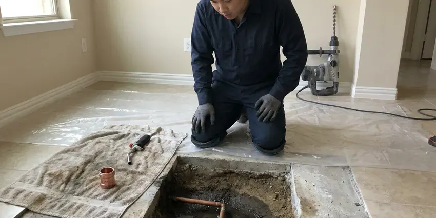

Gas Leak Repair in Sheboygan, WI
For urgent gas leak repair needs in Sheboygan, WI, trust HKV Plumbing. Our certified technicians are ready to secure your property and fix the problem.
- Fast Gas Leak Response
- Licensed Gas Specialists
- Certified Gas Technicians
- Rapid Emergency Response

Dealing with a Gas Leak? Get Help Now in Sheboygan, WI.
If you smell gas, leave the home, call your gas utility, then call us for the repair.
Expert Gas Leak Repair Services in Sheboygan, WI
HKV Plumbing repairs natural gas and propane leaks in Sheboygan homes and businesses, from loose fittings at the water heater to corroded steel lines buried in the yard. We isolate each section, pressure test it and repair or replace the failed components.
Our expertise includes:
- Reliable gas leak detection with specialized tools.
- Accurate gas leak detection using advanced tools
- Expert repair of all types of gas lines and fittings

Additional Plumbing Repair Services in Sheboygan, WI
We offer expert plumbing repair services across Sheboygan, WI to stop leaks, clear blockages, and keep every fixture working the way it should.


Customers
Why Choose HKV Plumbing for Gas Leak Repair in Sheboygan, WI?
Wisconsin homes, especially older properties or those with shifting foundations, can develop gas line issues. Our focused service makes sure your gas system is secure and up to code.
- Safety Certified, Our technicians are fully certified and follow strict safety procedures for all gas line work.
- Local Experts, Our technicians are highly trained and familiar with the gas line challenges found in Sheboygan, WI.
- Code Compliant, All repairs meet or exceed local Sheboygan and Wisconsin state plumbing and gas safety regulations.
Citywide Coverage
Our licensed gas plumbers cover every neighborhood in Sheboygan, along with nearby rural properties on propane. Homes, restaurants and small businesses are all covered.
Experienced Team
Our team of gas leak repair specialists has broad experience diagnosing and fixing complex gas line issues in Sheboygan homes. We are regularly trained on the latest safety protocols and repair techniques.
Safety-First Approach
Safety is non-negotiable for gas leak repair. HKV Plumbing follows strict safety procedures and follows all local Sheboygan and Wisconsin state gas codes so every repair is secure and long-lasting.
Trusted Certified Sheboygan Plumbing Services Professionals
At HKV Plumbing, we take pride in providing certified plumbing services throughout Sheboygan, WI. Backed by recognized industry credentials, our experienced plumbers combine technical skill with genuine customer care. Whether it is repair, installation, or maintenance, we follow strict safety and quality standards to deliver lasting results you can trust.
Call Us Now PHCC Plumbing Contractor Recognition
PHCC Plumbing Contractor Recognition Better Business Bureau (BBB) Accreditation
Better Business Bureau (BBB) Accreditation Angi Certified Pro
Angi Certified Pro ISO 9001 Quality Management Certification
ISO 9001 Quality Management CertificationCareful Gas Leak Repair Services in Sheboygan, WI
Gas Line Replacement and Upgrades in Sheboygan, WI
Sometimes a repair isn't enough, and a section or entire gas line needs replacement due to age, extensive corrosion or improper installation. HKV Plumbing provides full gas line replacement services, upgrading old or failing lines with durable, modern materials that meet current safety standards. We can also upgrade line sizes if you are adding new gas appliances, so your Sheboygan, WI home has enough and safe gas flow.

Emergency Gas Leak Repair in Sheboygan, WI
A gas leak is an emergency that demands immediate attention. HKV Plumbing offers 24/7 emergency gas leak repair services across Sheboygan, WI. If you smell gas, hear a hissing sound near a gas line or your carbon monoxide detector goes off, evacuate immediately and call us. Our fast response team is equipped to handle urgent situations, safely isolating the leak and performing necessary repairs to restore safety to your home.
Emergency Gas Leak Services in Sheboygan
Gas leaks are emergencies that require immediate attention. HKV Plumbing offers fast response for urgent gas leak situations across Sheboygan. If you smell sulfur or rotten eggs, hear a hissing sound or see visible damage to a gas line, leave the building and call us after contacting your gas utility. Our emergency team is equipped to isolate the leak, make the system safe and then perform permanent repairs.
Gas Meter to House Line Repair in Sheboygan, WI
The gas line running from your utility's meter to your home's main shut-off valve is a frequent area for leaks. This line can be exposed to environmental factors that accelerate wear. HKV Plumbing focuses on repairing or replacing these critical segments. We perform proper pressure testing and follow all local Sheboygan, WI regulations for gas line integrity, providing a secure connection for your home's gas supply.
Residential Gas Leak Detection in Sheboygan
Detecting a gas leak in your home requires specialized equipment and trained eyes. Our technicians use sensitive gas detectors and pressure testing methods to precisely locate leaks in natural gas lines, propane lines or appliance connections. We check all accessible piping, including lines running to furnaces, water heaters and stoves, so no potential leak goes unnoticed. Early detection is essential to preventing serious hazards and protecting your family.
Gas Leak Detection in Sheboygan
Some gas leaks are obvious from the rotten egg smell, while others are slow and hard to find. We pressure test the system with a gauge to confirm a leak, then isolate sections to narrow it down. Electronic combustible gas detectors and leak solution pinpoint the exact fitting or pipe. Accurate detection keeps the repair smaller.
Propane Gas Leak Repair in Sheboygan, WI
Rural homes often run on propane from an above-ground or buried tank. Leaks may occur at regulators, tank connections or underground lines. Because propane is heavier than air, leaks can collect in low areas. We test the full system, repair the leak and confirm correct regulator pressures.

Appliance Gas Line Repair in Sheboygan, WI
Gas leaks can occur at connections to appliances like water heaters, furnaces, stoves or clothes dryers. These often involve worn flex lines, loose fittings or failed shut-off valves. Our technicians are skilled in identifying and repairing leaks at these critical points. We can replace old or damaged appliance connectors, tighten fittings and make sure all gas appliances in your Sheboygan, WI home are properly and securely connected to the gas supply.
Trusted Gas Leak Repair Near Me in Sheboygan, WI
When you search for 'gas leak repair near me' in Sheboygan, WI, you want a reliable, local expert who can respond quickly. HKV Plumbing is your community's reliable choice, with technicians based across the area to provide fast service. We understand the plumbing and gas systems of Sheboygan.
When you need gas leak repair near me, the most important thing is a licensed plumber who follows safety procedures. HKV Plumbing brings detectors, gauges and repair materials on every gas call. We fix the leak and make sure the whole system is leak free.
HKV Plumbing at a Glance
- Fully licensed plumbing team covering Sheboygan, WI
- Same-day appointments and 24/7 emergency response
- Clear written estimates, no hidden fees
- 4.8-star rated by 448+ Wisconsin customers
Sheboygan Map
Sheboygan Information
- Population
- 49,686
- Area codes
- 920/414/262
- Service area
- Sheboygan and communities within 40 miles
- Nearby
- Oshkosh, Milwaukee, Wauwatosa, Appleton
Boilers, furnaces and water heaters run hard through the winter, so seasonal maintenance helps prevent failures during deep cold. Ground movement and corrosion can both lead to leaks, so keeping gas lines sound is key for homes in Sheboygan, WI and their long-term safety.
Expert Services
Trust our professionals for reliable HKV Plumbing solutions in Sheboygan, WI.
Our Specialized Plumbing Services in Sheboygan, WI
At HKV Plumbing, we provide a complete range of plumbing services across Sheboygan, WI. From leak detection to full system installations, our team ensures fast, precise, and affordable service for both residential and commercial properties. Explore our core services below:


How Our Gas Leak Repair Process Works in Sheboygan, WI
From your first call to the final safety check, we follow a careful process for every gas leak repair.
Request a Quote
If you smell gas, leave and call your gas utility first, then call (414) 432-4641 for the repair. We schedule the earliest safe visit and explain what to expect next.
Test and Locate
We pressure test the system, isolate sections and pinpoint the leak with detection equipment. You receive a flat price for the repair before work begins.
Repair and Restore
We repair the leak with approved materials and pressure test the full system. Appliances are relit and checked, or service is coordinated with the utility.
Frequently Asked Questions About Gas Leak Repair in Sheboygan
The cost of gas leak repair in Sheboygan, WI can vary a lot depending on the leak's location, severity and the extent of pipe damage. Minor repairs, like tightening a connection, might range from $150 to $400, while more complex issues involving pipe replacement could be between $500 and $2,500 or more. We provide a clear estimate after a careful inspection.
Yes, a gas leak is always an emergency. Natural gas is highly flammable and can lead to fires, explosions or carbon monoxide poisoning. If you suspect a gas leak, get everyone out of the building, call 911 from a safe distance and then contact HKV Plumbing for immediate repair.
HKV Plumbing puts first gas leak emergencies and aims for the fastest possible response times in Sheboygan. While exact times vary based on traffic and call volume, we dispatch technicians immediately upon receiving an emergency call so your safety is addressed as quickly as possible.
Most areas have no annual requirement for homeowner gas line inspections, but it is highly recommended to have your gas lines inspected every 3 to 5 years, or whenever you notice a potential issue like an odd smell or a drop in appliance performance. Regular inspections can identify problems before they become dangerous leaks, especially where ground movement or tree roots are a concern.
Yes, our technicians are experienced in inspecting and repairing gas lines connected to all major brands of gas appliances, including water heaters from Rheem, Bradford White and A.O. Smith, as well as ranges and dryers from brands like Whirlpool, GE and Samsung. We make sure the connection to your appliance is tight and leak-free.
No, you should never attempt to fix a gas leak yourself. Gas line repairs require specialized training, tools and strict adherence to safety codes. Improper repairs can be very dangerous and lead to severe consequences. Always call a licensed professional like HKV Plumbing.
A carbon monoxide detector does not detect natural gas leaks. Natural gas has no smell of its own, so an additive gives it a rotten egg odor, while carbon monoxide is an odorless, colorless gas that results from incomplete combustion. While a carbon monoxide detector is essential for safety, it won't alert you to a gas leak. You need to rely on your sense of smell or a dedicated gas leak detector.
Many fitting and connector repairs take one to two hours. Underground line repairs can take most of a day, including excavation and testing.
What People Are Saying About Our Plumbing Experts?

Daniel K.
A pipe burst at 11 pm and they actually answered. The plumber showed up within the hour, shut everything down, and had us back to normal the next morning. Could not ask for more.
Emergency Plumbing · Green Bay, WI
Mark T.
When our office needed drain cleaning, HKV Plumbing provided quick, reliable service. The plumber arrived on time and made sure every drain flowed perfectly before leaving. Very satisfied.
Drain Cleaning · Sheboygan, WI
Sofia M.
Two new toilets installed in one visit, no mess left behind, and the tech even adjusted a faucet he noticed was dripping. Fair pricing and really friendly.
Toilet Installation · West Allis, WILaura S.
I scheduled a water heater replacement, and the team made the process smooth and affordable. The new unit works perfectly, and they cleaned up after completing the job.
Water Heater Replacement · Wauwatosa, WI
Robert G.
The trenchless sewer replacement saved our front yard. They walked us through the camera inspection footage first so we knew exactly what we were paying for.
Sewer Line Replacement · Wauwatosa, WIJames P.
Our commercial plumbing system had a leak under the sink, and HKV Plumbing handled it professionally. The plumbers arrived quickly and restored everything without disruption to our customers.
Commercial Plumbing · West Allis, WI